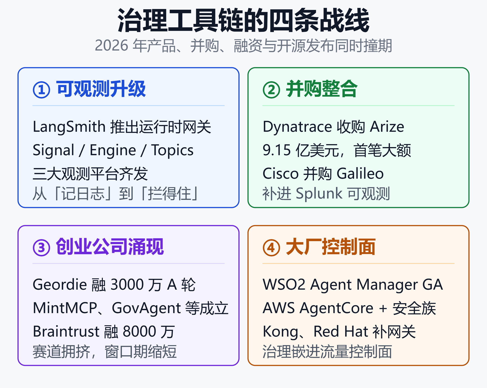
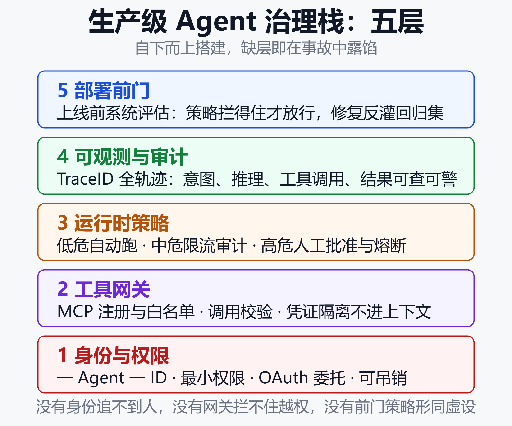

Agent 上生产，先过治理这道门：2026 治理工具链为何集中爆发
一个 9.15 亿美元的并购，和一扇刚装上的门
2026 年 8 月 13 日，Dynatrace 宣布以 9.15 亿美元收购 AI 可观测性公司 Arize（约 8.15 亿美元现金加替换股权）。一个月后，WSO2 宣布 Agent Manager 正式 GA，主打「跨框架、跨模型、跨部署的开源控制面」。
再往前翻半年：LangSmith 在 5 月推出运行时治理网关 LLM Gateway；Cisco 4 月把 Galileo 拖进 Splunk；Braintrust 在 2 月完成 8000 万美元 B 轮；Geordie AI 同月宣布 3000 万美元 A 轮，五个月 ARR 增长 1300%；NIST 在 2 月启动 AI Agent Standards Initiative……
这不是零散的产品更新，而是生产级 Agent 治理工具链在 2026 年的集中涌现。Gartner 2026 技术成熟度曲线首次把「agentic AI 治理」「agentic AI 安全」「FinOps for agentic AI」列为独立条目——监管、并购、融资、开源发布，在同一个时间窗口撞到了一起。
为什么是现在？这道「治理之门」里到底装了什么？企业又该怎么选？
一、三股推力：为什么治理工具链在 2026 爆发
1.1 需求侧：能力已到生产，信任没跟上
IDC 2026 年智能体调研给出两个扎眼的数字：
- 62% 的企业把数据权限与安全合规列为智能体跨系统执行的首要障碍
- 58.7% 的企业把治理与合规放在引入智能体平台目标的首位
供给侧那边，Agent 已经能制订计划、调用工具、读写业务系统；需求侧却卡在「我怎么知道它干了什么」。安全内参引用的真实案例很典型：某中型电商团队用 Agent 做 K8s 告警响应，因误判目标 Pod 导致服务中断 15 分钟，只能人工回滚。
能力释放与信任缺失之间的落差，就是治理工具的市场空间。AWS 在 2026 年台北 Summit 上把话说得更直白：企业 AI 竞争已从模型能力走向 Agent 落地，而阻碍规模化部署的不是模型，是「能否安全、可靠且大规模投入企业营运」。
1.2 监管侧：从「管模型」转向「管行动」
三个法域在 2026 年几乎同时动了：
- 美国：NIST CAISI 于 2 月 17 日启动 AI Agent Standards Initiative，三根支柱分别是行业主导标准、社区开放协议、Agent 身份与认证研究；NCCoE 同步发布 Agent 身份授权概念论文，探索用 OAuth 2.0、SPIFFE/SPIRE 和 MCP 给 Agent 发「工号」
- 中国：2026 年 5 月，国家网信办等三部门联合印发《智能体规范应用与创新发展实施意见》，首次将 Agent 作为独立监管对象——治理对象从静态模型转向动态执行流程
- 欧盟：AI Act 第 14 条要求高风险系统具备人工监督机制，高风险合规节点落在 2026 年 8 月
监管锚点一确立，企业采购清单上的「治理能力」就从加分项变成准入项。
1.3 供给侧：部署量到了，工具缺口藏不住
Gartner 2026 年 CIO 调查显示：只有 17% 的组织真正部署了 AI Agent，但超过 60% 计划两年内部署——这是所有被测新兴技术中最激进的采用曲线。微软 2026 年 2 月披露，80% 的 Fortune 500 已在使用活跃 AI Agent。
部署量上来了，治理工具却长期靠拼凑：一个网关、一套护栏、一个可观测面板，出问题时在三个控制台之间对不上号。LangSmith 团队在发布网关时直接点破现状：过去想同时拿到观测和拦截，得自己缝合网关、护栏平台和可观测栈三套东西。
拼图时代结束了。2026 年，四条战线上的玩家同时交卷。

图中四条战线就是下文的展开结构：可观测平台向上生长、并购整合加速、初创公司密集成立、云与中间件大厂补齐控制面。
二、四条战线：工具链如何「集中」涌现
2.1 战线一：可观测平台升级成治理平台
2025 年，LangSmith、Arize、Braintrust 的主叙事还是「给 LLM 应用装黑匣子」。2026 年画风变了：
- LangSmith LLM Gateway（2026 年 5 月，私有 Beta）：坐在 Agent 与模型供应商之间，在请求到达模型之前执行花费限额、脱敏 PII；策略违规直接以可追踪事件流回 LangSmith，从「被拦截的请求」跳到「触发它的 trace」再跳到「修复」，不用换工具。后续路线图是把 Agent Gateway 做成所有运行时策略的中央控制面
- Arize Signal / LangSmith Engine / Braintrust Topics：三家在 2026 年先后上线「自动读生产 trace」的能力。当 Agent 每周产生 5 万条 trace，没有工程师能靠肉眼读出失败模式——平台开始替人做「检测 → 定位 → 修复 → 验证」闭环
- Credo AI 发布的《Agentic AI Governance Field Guide》把治理系统拆成六大组件：Agent 注册表、Agent Card、宪法、部署前门、运行时验证、工具网关——等于给「可观测 → 治理」的升级画了张施工图
可观测回答「发生了什么」，治理网关回答「允不允许发生」。2026 年的关键变化是：两者进了同一个产品。
2.2 战线二：并购整合，赛道开始结算
| 时间 | 交易 | 金额 |
|---|---|---|
| 2026-04 | Cisco 收购 Galileo | 未披露 |
| 2026-08 | Dynatrace 收购 Arize | 9.15 亿美元 |
Cisco 把 Galileo 拖进 Splunk，补的是「Agent 行为、表现与风险」的开发到生产全周期可见性；Dynatrace 拿下 Arize，则是要把应用性能监控与 AI 评估拼成端到端可观测。传统可观测巨头不再观望，直接买票入场——这意味着独立治理小工具的窗口期在缩短。
2.3 战线三：初创公司密集成立
Tracxn 上一批 2026 年注册的公司，几乎清一色贴着 GRC / Agent 治理标签，且多处于未融资或早期状态：
- Geordie AI：2026 年 5 月完成 3000 万美元 A 轮，自称五个月 ARR 增长 1300%，覆盖发现、运行时、修复、合规全链路
- MintMCP（2 月发布）：MCP Gateway + Agent Monitor + 智能护栏，口号是「EDR 为员工笔记本做的事，AI Agent 也需要」
- GovAgent：REST 形式的治理 sidecar，做阶段门控与失败模式检测，不阻塞主链路
- RunAgents / AI Control / Agent G8：分别主打身份感知访问、OPA 策略拦截、MCP 注册表与 API 白名单
配套资金面也在同步升温：Braintrust 2 月融 8000 万美元 B 轮；Coralogix 6 月融 2 亿美元 F 轮（累计 5.5 亿）；OpenObserve、Respan 各拿 1000 万 / 500 万美元。钱和公司一起涌进来，赛道拥挤已成事实。
2.4 战线四：云与中间件大厂补齐控制面
大厂的打法不是做单点工具，而是把治理嵌进已有控制面：
- WSO2 Agent Manager（2026 年 9 月 GA，Apache 2.0）：框架无关的联邦控制面，统一 Agent 清单、可验证身份与即时吊销、40+ 内置护栏（PII 掩码、限流等）、Kubernetes 原生沙箱运行时与一键挂起
- AWS Bedrock AgentCore + Continuum：AgentCore 管记忆、工具调用、API 访问与身份；Continuum 把威胁建模、代码审查、渗透测试打包进安全家族
- Red Hat：MCP 网关前置策略检查点，按调用分三层风险——低危自动执行并记录，中危限流审计，高危（凭据、破坏性操作）挂起等人工批准
- Kong AI Gateway 2.0（2026 年 9 月 GA）：A2A 与 MCP 指标可观测，把工具调用纳入流量治理
一句话概括四条战线的合流：治理从「外挂的审计报表」变成了「Agent 流量必经的闸机」。
三、这道门里有什么：生产级治理栈的五层
综合 LangChain 官方治理页、MLflow 生产实践清单、Credo AI 六大组件与 Red Hat 三层模型，2026 年公认的生产级治理栈大致长这样（自下而上）：
3.1 身份与权限：给 Agent 发工号
Agent 不能借用员工账号跑任务。NCCoE 概念论文点名两种反模式：Agent 继承用户全部权限（过宽），或共享静态密钥（无法追责）。方向是 OAuth 2.0 委托授权 + SPIFFE 工作负载身份，让每次调用都绑定「谁的委托、哪个 Agent、多大范围」。国内产品如派拉软件 AgIM、数犀 MCP 鉴权也在做同一件事：一 Agent 一 ID，影子 Agent 可发现、可清理。
3.2 工具网关：MCP 时代的闸机
Agent 的能力经 MCP Server 扩展，攻击面也跟着扩大。网关层做三件事：工具注册与白名单、每次调用的 schema/策略校验、凭证隔离（密钥只存在私有 worker，不进模型上下文）。MintMCP、Agent G8、腾讯云 Agent 网关、Kong 都在这一层。
3.3 运行时策略：分级拦截与人工闸口
低危自动跑、中危限流审计、高危人工批准——这是 Red Hat 与国内「行为围栏」共识的最大公约数。LangSmith LLM Gateway 补的是成本与 PII 维度：策略在请求打到模型之前生效，而不是事后在日志里发现。
3.4 可观测与审计：全轨迹留痕
唯一 TraceID 串联意图、推理、拆解、工具调用与结果；日志要可检索、可告警，高危场景还要防篡改。MLflow 给出的生产底线值得记：每个已识别失败模式至少 50 条评估用例才允许上线；步数、耗时、token、工具调用次数都要有预算，超限即停并升级人工。
3.5 部署前门与持续评估
Credo AI 把「部署前门」列为六组件之一：上线前用系统评估验证策略真的拦得住。Braintrust 的定位很典型——「用评估控制什么能进生产」；LangSmith 则把生产 trace 反灌回数据集，让修复变成回归覆盖。

五层里缺任何一层，都会在真实事故里露馅：没有身份追不到人，没有网关拦不住越权，没有运行时策略只能事后复盘，没有审计过不了合规，没有部署前门则策略形同虚设。
四、最大的坑：统一治理必然失败
工具多了，新问题也来了。Gartner 2026 年 5 月的预警标题很重：《对所有 AI Agent 施加统一治理将导致企业 Agent 失败》，并预测到 2027 年，40% 的企业将因生产事故后才暴露的治理缺陷，降级或退役自主 Agent。
核心论点是：把治理做成二元开关——要么锁死、要么全信——两头都会出事。对简单只读 Agent 过度限制，会拖慢交付并催生影子开发；对高自主 Agent 约束不足，则直接放大运营、安全与合规风险。
Gartner 给出的替代方案是按自主级别做比例治理：
| 级别 | 含义 | 治理要点 |
|---|---|---|
| L1 观察 | 只读，输出仅给请求者 | 轻量、防数据外泄 |
| L2 建议 | 给建议，人来执行 | 评准确率与幻觉 |
| L3 审批后行动 | 每步动作先过人 | 审批必须真实有效 |
| L4 自主行动 | 速率可超人力监督 | 熔断、回滚、归属 |
另一个清醒的声音来自 Credo AI 的开篇判断：Agentic AI 的扩张速度快于史上任何企业技术，而与之匹配的治理基础设施尚不存在。 当下这批工具是第一代补位者，不是成品。
五、国内视角：围栏、网关与身份台账
国内工具链与海外几乎同步成型，但切入点不同——更强调网关收敛、身份台账与全链路留痕。
- 平台侧：腾讯云推出 Agent 网关服务（多模型统一接入、MCP 管理、A2A 路由）与统一治理平台（动态权限、凭据沙箱、模型路由）；阿里云在云采用框架中补齐 AI 全生命周期合规审计（事前 IaC 扫描、事中管控拦截、事后配置审计）
- 安全侧：奇安信智能体安全监测平台主打流量审计与行为合规；深信服以安全 GPT 做检测；CNCERT 已就智能体默认权限过高、提示注入等风险发布提示
- 身份侧：派拉软件 AgIM 管 Agent 全生命周期与影子治理；数犀做 MCP 网关 + 用户/Agent 双身份鉴权
- 方法论侧：中移智库与安全内参提出的「行为围栏」框架收敛为三条——行为可观测、操作可审计、风险可干预；信通院与三六零联合报告要求全链路审计追踪与动态沙箱熔断
与海外对比，国内更早把「治理与合规」写进平台选型第一位（IDC 58.7%），海外更早把治理做进可观测产品的默认路径。殊途同归：Agent 上生产，都得先过这道门。
六、企业怎么选：四条务实建议
结合 Northflank 的四阶段落地路径、MLflow 生产清单与上述工具格局，给正在选型的团队四条建议：
建议一：先分级，再选型
先给每个用例标 L1–L4 自主级别，再对照工具能力。只读知识问答（L1）不需要和资金审批流（L3/L4）共用同一套审批链。Gartner 的警告翻译成选型动作就是：不要买一个「治理一切」的平台，要买一套能按级别组合的控制。
建议二：网关与身份优先于仪表盘
审计出问题时，最先被问的是「谁授权的、调了什么」。身份（一 Agent 一 ID、最小权限、可吊销）和网关（白名单、凭证隔离）没铺好之前，可视化仪表盘只是好看的空转。这与既有调研结论一致：出了 AI 安全事件的组织，几乎都没做好访问控制。
建议三：治理数据要能闭环回评估
只告警不闭环的治理会越用越吵。优先选能把生产 trace 反灌成评估集、把拦截事件关联到具体 trace 的工具（LangSmith、Arize AX、Langfuse 这类观测底座都可作闭环起点，详见 Langfuse 实战指南）。
建议四：预留并购与标准的不确定性
赛道还在结算期（Arize 已入 Dynatrace、Galileo 已入 Splunk），标准也在成形（NIST 三支柱、中国智能体实施意见、MCP 规范演进）。策略上：协议层优先开放标准（MCP、OpenTelemetry），数据层要求可导出，避免把审计日志锁死在单一厂商。协议本身的理解可参考 MCP vs A2A 深度对比。
小结
三个最该记住的事实：
- 爆发是三股推力叠加的结果：62% 企业卡在权限合规、中美欧监管在 2026 年密集落子、17% 部署率对上 60% 的两年计划——需求、规则、缺口同时到位，治理工具链才在四条战线上一起交卷
- 治理栈已收敛出五层共识：身份、工具网关、运行时分级拦截、全轨迹审计、部署前门；核心转变是从「事后记日志」到「事前和事中拦得住」
- 别把治理做成二元开关：Gartner 预测 40% 企业将因治理失败退役 Agent，但那是「统一治理」的失败，不是「分级治理」的失败——先标级别，再装闸机
一句话概括当下：Agent 的能力已经过了生产门槛，治理工具链是 2026 年才补装的那道门。门要装，但别装成一扇所有 Agent 都挤不过去的窄门。
免责声明
本文内容基于公开可查的资料整理，包含厂商官方公告、行业媒体报道和第三方研究机构数据，仅供参考和学习交流。Agent 治理领域发展极快，产品能力、融资并购状态、监管要求和标准版本可能在本文发布后发生变化，请以各厂商官方文档和最新监管规定为准。文中引用的市场预测与调查数据来自不同机构、口径各异，不构成任何投资建议或商业决策依据。企业在部署生产级 Agent 前，应结合自身行业监管要求独立评估合规义务。
参考来源
- Gartner — 2026 Hype Cycle for Agentic AI
- Gartner — Applying Uniform Governance Across AI Agents Will Lead to Enterprise AI Agent Failure
- Gartner — Forecasts Worldwide AI Spending to Grow 47% in 2026
- NIST — AI Agent Standards Initiative
- NIST — Announcing the AI Agent Standards Initiative for Interoperable and Secure Innovation
- NIST NCCoE — Accelerating the Adoption of Software and AI Agent Identity and Authorization
- Cloud Security Alliance — NIST AI Agent Standards: Enterprise Governance Implications
- Dynatrace — Dynatrace to Acquire AI Observability Leader Arize
- SiliconANGLE — Observability shifts as AI agents reshape operations
- CRN — Cisco To Snap Up AI Observability Startup Galileo Technologies
- WSO2 — WSO2 Agent Manager Brings Sovereign AI Governance to Enterprise Agent Sprawl
- LangChain — LangSmith LLM Gateway: runtime governance built into the agent lifecycle
- LangChain — AI Agent Governance Platform
- Arize — Arize Signal vs. LangSmith Engine vs. Braintrust Topics: a technical comparison (2026)
- Credo AI — Agentic AI Governance: The 2026 Field Guide for Leaders
- Braintrust Raises $80M in Series B Funding — FinSMEs
- Geordie AI — Geordie AI Raises $30M Series A as Enterprises Race to Govern Autonomous AI Agents
- MintMCP Launches Enterprise Governance Platform for AI Agents and MCP Servers — Business Wire
- Red Hat Developer — Constraining AI agents with Red Hat AI: Containment, identity, and governance
- MLflow — Building Production-Ready AI Agents in 2026
- iThome — AWS宣布2026進入Agent AI元年，打造從開發、資安到知識管理的企業AI代理平臺
- 安全内参 — 智能体行为围栏：Agent治理框架与实践路径
- 腾讯云 — Agent 网关服务：多模型统一接入与 AI 智能体治理平台
- 阿里云 — AI全生命周期合规审计治理
- ThinkingAI — 企业级 AI Agent 安全与治理指南（2026）：权限、审计与可信决策
- Coralogix Raises $200M to Scale the Observability Backbone for the Age of AI — GlobeNewswire
- OpenObserve Raises $10 Million Series A to Accelerate AI-native Observability — Morningstar
- Respan raises $5M to bring proactive observability to AI agents — SiliconANGLE
- Kong — Enterprise-Grade MCP Access Control Is Here
- Factory — Introducing Agent Readiness
相关阅读
- Agent 治理与可观测性：企业落地的隐藏成本
- 企业 AI Agent 部署实战：从0到1600个Agent的落地路径
- MCP vs A2A：两大 AI Agent 协议深度对比
- Langfuse实战：给AI Agent装上黑匣子——开源LLM可观测性平台完全指南
- AI 幻觉责任链：谁该为错误答案负责
- 从 LLM 到 Agent：ChatGPT 的范式转移
- 代码沙箱实战指南：给 AI Agent 关进笼子
- Vibe Coding 的隐藏代价与安全风险
推荐搭配装备
善其事，利其器。以下硬件能最大化你的AI体验👇
🔗 通过以上链接购买可支持本站持续运营 🙏